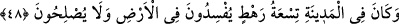
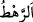

uğramasına hükmedilir.
Sonra ehlüllâhın nazarında sıkıntı ve lütuf (mihnet ve minhat) eşittir. Çünkü onlar her
ikisini de Allah’tan görürler. Bu yüzden vakitleri safâ ve huzur ile geçer. Allah’a
tevekkül ederler, uğursuzluk görmezler. Allah’a hamd ederler, sızlanmazlar.
Sonra günah musîbeti, diğer musîbetlerden daha büyüktür. Bâtının imtihanı/musîbeti,
zâhirin imtihânından/musîbetinden daha çetindir. İbnü’l-Fârız (r.h.) der ki:
Eyyûb’ün bütün imtihanı, benim imtihanımın bir kısmıdır.
Onun maksadı şudur: Benim hastalığım ruhtadır, Eyyûb (a.s.)’ın hastalığı ise
ceseddedir. Hem de o, peygamberlik kuvvetiyle desteklenmiştir. Dolayısıyla benim
imtihânım onun imtihânından daha şiddetlidir.
Allah Teâla’dan af ve âfiyet isteriz.
48. O şehirde dokuz kişi (elebaşı) vardı ki, bunlar yeryüzünde bozgunculuk
yapıyorlar, iyilik tarafına hiç yanaşmıyorlardı.
“O şehirde dokuz kişi (elebaşı) vardı ki,” Bu şehir, Sâlih (a.s.)’ın şehri olan
Hicr’dir. Burası Hicaz ile Şam arasındaki Semûd kavminin diyarıydı.
“
” ile “
” arasındaki fark şudur: “
” aralarında kadın olmayan üçten veya
yediden ona kadar erkeklerden oluşan gruptur. “
” ise üçten dokuza kadar olan
gruptur.
Vehb b. Münebbih’ten bir rivâyete göre bu dokuz kimsenin isimleri şunlardır: Hüzeyl
b. Abdürab, Ganem b. Ganem, Rebâb b. Mihrac, Mısda’ b. Mihrac, Umeyr b. Kerdube,
Âsım b. Mahrame, Sübayt b. Sadafe, Sem’ân b. Safiyy ve Kudâr b. Sâlif.
Keşfü’l-esrâr’da der ki: “Onların isimleri şunlardır: Kudâr b. Sâlif, Mısda’ b. Dühr,
Eslem, Ruhmî, Ruheym, Du’mî, Duaym, Kubâl, Sıdâf. İşte deveyi boğazlamaya
çalışanlar bunlardır. Sâlih (a.s.)’ın kavminin en azgınları olup ileri gelen kimselerin de
oğulları idiler.
Sonra Allah Teâlâ bu dokuz kişiyi şöyle vasfetti: “Bunlar yeryüzünde” Hicr
topraklarında günahlar işleyerek “bozgunculuk yapıyorlar,”
el-İrşâd’da: “Sadece şehirde değil, yeryüzünde fesad çıkarıyorlardı” der. Bu, uzak
bir tefsirdir. Çünkü “yeryüzünde” kelimesi, bu kıssanın benzerlerinde mutlak olarak
yeryüzüne değil belli bir yer, yâni her kabilenin ve kavmin toprakları/memleketi olarak
yorumlanmıştır
“iyilik tarafına hiç yanaşmıyorlardı.” Islah namına hiç bir şey yapmıyorlardı.
Bunun önceki cümleye atfedilmesinin faydası, fesadlarına asla iyilik ve ıslah namına
bir şeyin karışmadığını açıklamaktır.